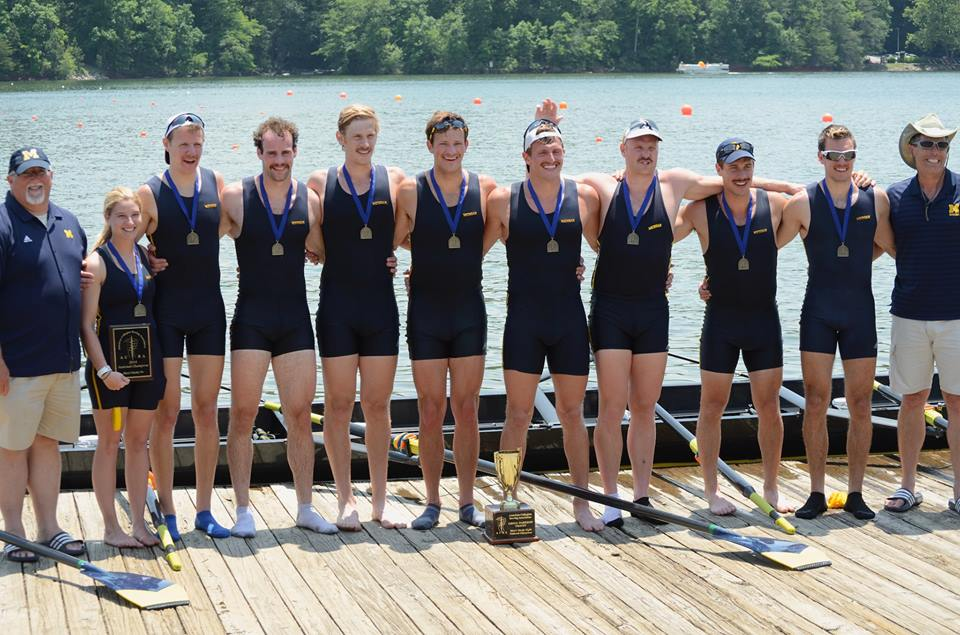

|

ACRA Championships
March 29, 2014
GAINESVILLE, GA
– On Thursday, May 22nd, the University of Michigan Men's Rowing Team travelled to Gainesville, Georgia for a weekend of racing at the ACRA National Championship. Racing began with heats on Saturday, May 24th.
Senior Mark Kennedy, who doubles as assistant coach, placed second to the eventual silver medalist from Virginia Commonwealth University in his heat for the Varsity Single. In a tough semifinal, Kennedy placed seventh to the eventual winner from UCSB. Kennedy's finish was good enough to garner a point for Michigan's team points total.
The other small boat, the Pair, won their heat easily. The crew, made up of seniors Zach Coburn and Aamod Dekhne, raced in a painfully close contest in the final, placing second to Clarkson by a mere 0.7 seconds.
The Freshman Four nipped Virginia by 0.2 seconds in their heat to qualify for semifinals, where they faced perennial rival Michigan State. In another close race, UM beat MSU by 1.3 seconds to move on to the Grand Final, where the crew won gold out of Lane 4 by a 0.6 second margin.
Meanwhile, the 1F also defeated the Wahoos in their heat to advance. In one of the tightest races of the day, the first years missed a medal by only 0.2 seconds, placing fourth. Michigan was only 2.2 seconds off of winner Orange Coast.
UM's newly minted 2V of Rita Maizy, Alex Brown, Alika Ziker, Ian McGraw, Ben Dirkse, William Burstein, Kevin O'Connor, Lucien Gerondeau, and Bharat Srinivasan controlled their heat against UCSB and Purdue. In the final, UM won the event for the sixth straight year in one of the most dominant performances of the day. The crew took an early lead and continued to move away before finishing in a blistering time of 5.48.1, open water over silver medalist Virginia.
Michigan's Varsity Four, which was prioritized over the 2V for the first time in team history, dominated their heat to qualify for the Grand Final with a time of 6:44.3. In the final, the four snatched an early lead and held on, beating George Mason by 2.3 seconds. They became the first Varsity Four from UM to win the event at ACRA, making Michigan the first team to ever win both the Varsity Four and Varsity Eight in the history of the regatta.
In a close heat, the Lightweight Four of Rachel Lombardi, Jordan Sykes, Hayden Sonnier, Steve Sikora, and Andrew Barber won by 0.5 seconds to secure their spot in the final. In a dramatic race on Sunday, the lightweights nipped fourth place finisher Virginia Commonwealth by 0.4 seconds to grab the bronze medal.
Two events, the 2F and Quad, were undersubscribed and needed only a race for lanes before Sunday's Grand Final. The 2F came in third out of five crews in their race for lanes, only 3.5 seconds off winner Purdue. In their five - boat Grand Final, the freshmen raced an excruciatingly close contest, missing a medal by only 0.1 seconds. The Quad, in the inaugural year for the event at ACRA and for Michigan as a team, unleashed a massive 12 second victory to secure the top seed for Sunday's final. The lineup of Ben Rebertus, Brandon Gregg, James Garay, and William Denman dominated their four - boat Grand Final, beating silver medalist UCSB by five seconds.
The 1V, undefeated all season sans their heat at the San Diego Crew Classic and the Grand Final of ECACs, crushed Boston College to advance from heats. In their semifinal, the Varsity controlled the race against Grand Valley, a crew they had beaten at Lubbers Cup, MACRA, and the Dad Vail. The eight's Grand Final, the premiere event of the regatta, resulted in the 1V grabbing gold over rivals Virginia and Grand Valley. This was the second straight 1V gold at ACRA for UM, as well as the fifth in seven years.
With five crews winning and two others medaling, it was clear after racing that the Wolverines were the Team Points Champions for the seventh straight year. Michigan has never lost this trophy since the National Championship's inauguration in 2008. While ACRA was successfully concluded, Michigan still has some racing left. The team will be sending an eight and a four to the Henley Royal Regatta in England in late June and early July.
###
|